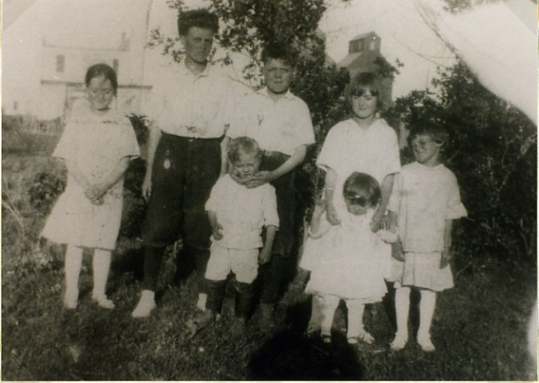

| Raymond Allan Wogsland was born 13 November 1904 to Florence and Andrew Wogsland. He married LouElla Richter, who had three children from a previous marriage. They made a home together in Seattle, WA. In his later years, Raymond did a good deal of genealogical work on his part of the family. Ray died January 5th, 1999 in King County, WA. |
 The Wogsland Children in Walum, ND Florence, Cliff, Ray, Alberta, Luella Vernon, Ruth |